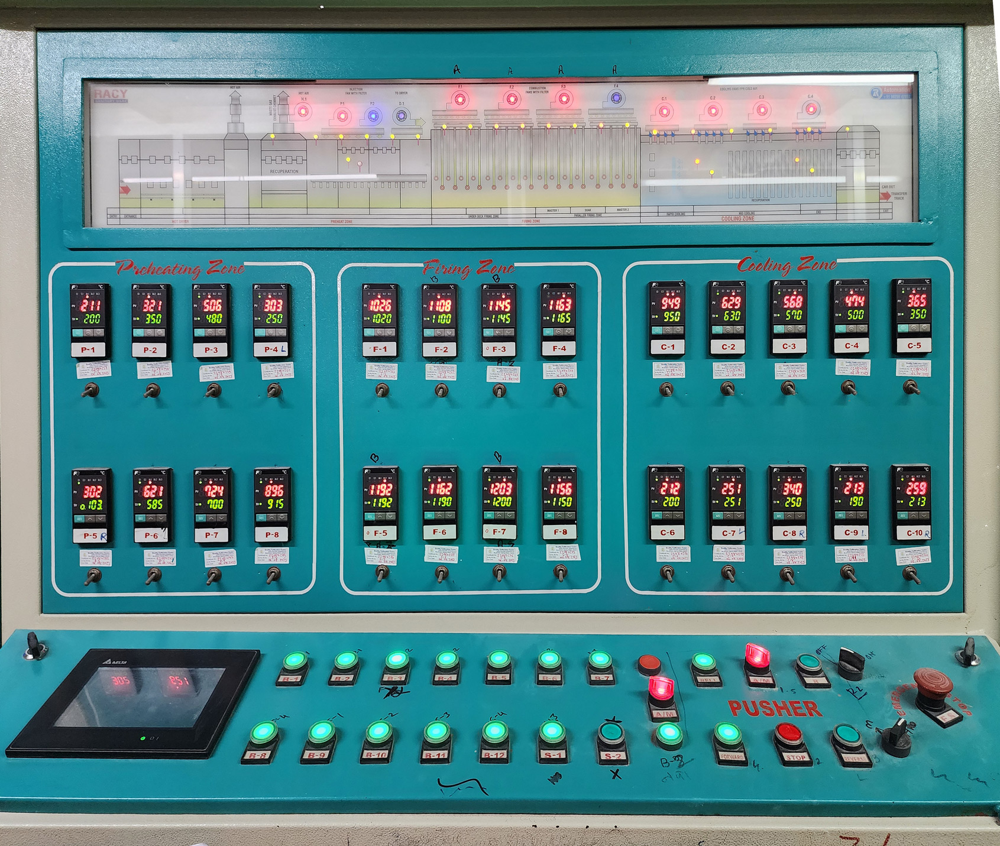
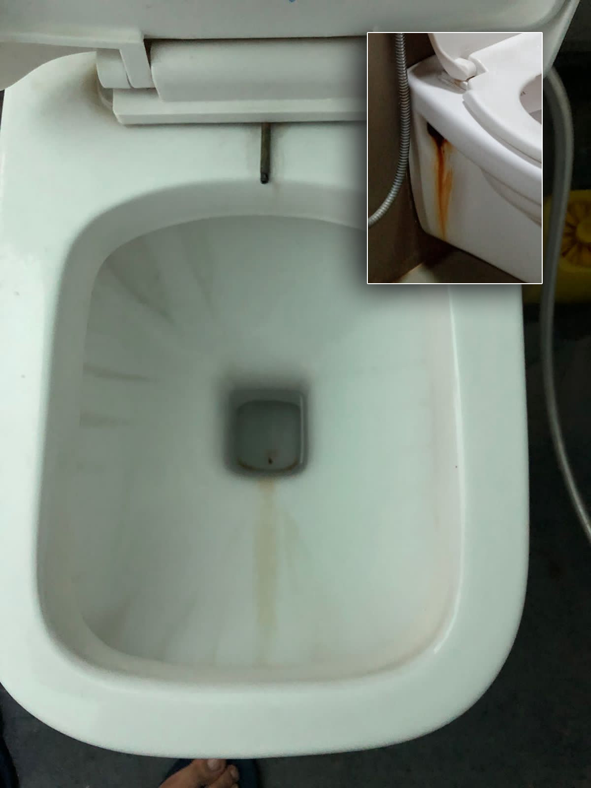
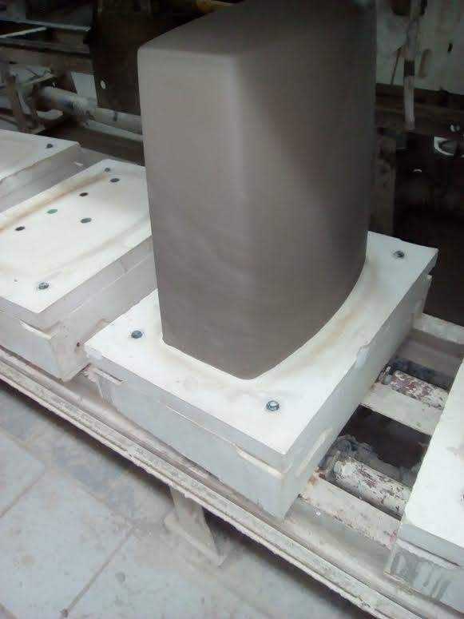
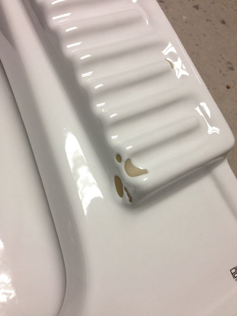
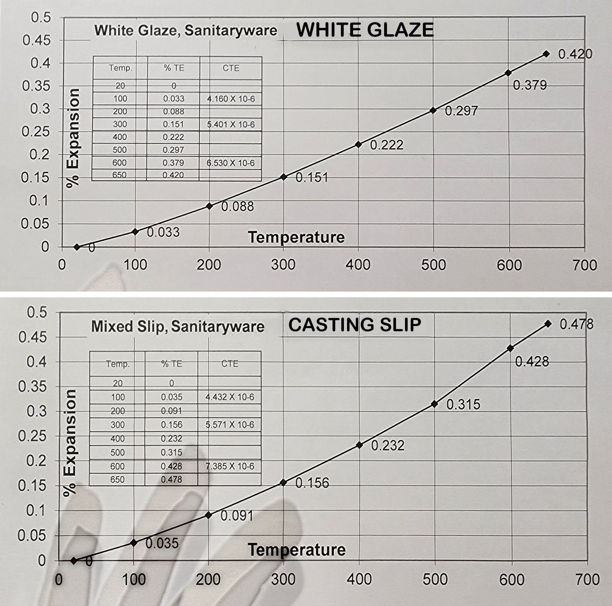
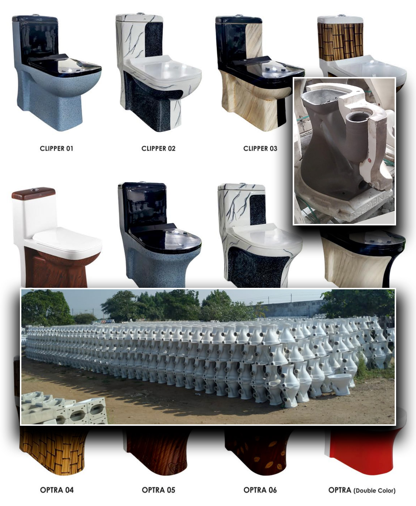
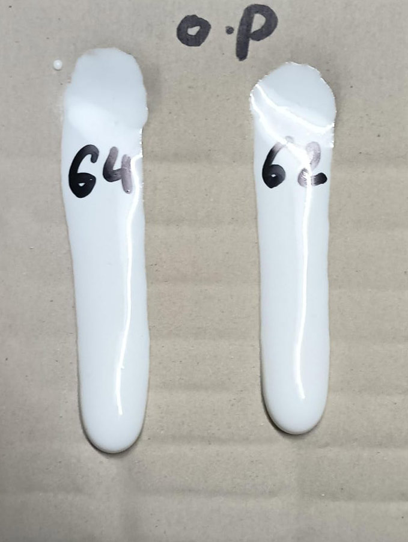
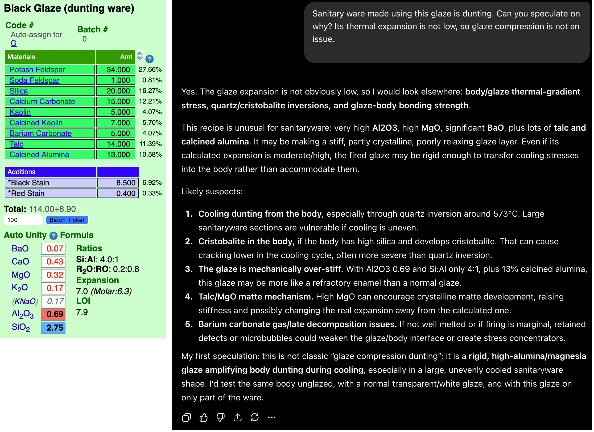

Sanitary ware
A type of porcelain zircon-glazed ceramic that includes bathtubs, sinks, toilets, etc.
Key phrases linking here: sanitary ware, sanitaryware - Learn more
Details
This is a very large industry worldwide, second only to ceramic tile in clay and energy use. The knowledge of how to make sanitaryware can be found on every industrial continent, especially Asia. Chaozhou, China has hundreds of sanitary ware factories and Morbi, India has 300. However many other countries have very highly developed processes and innovative products (e.g. the Middle East, Italy, Germany and Spain).
Some of the factories in Asia-Pacific are less automated, use lower-quality materials and rely on local hot climates for drying. It is also common to have few technical people on staff (requests we get for technical assistance generally come from these types of companies). At the other end of the spectrum, the modern form of manufacture is barely recognizable when compared to a few decades ago.
Most sanitary ware is fired at high temperatures (e.g. 1280-1290C) and is made from porcelain bodies resembling the standard 4x25 recipe (feldspar, kaolin, silica, ball clay). Ware fired lower (e.g. 1200C) requires that body to have more feldspar (e.g. 30-35%), this must be at the expense of quartz and clay. Grog or powder made from rejects is also often included. Ware is glazed using zircon opacified feldspar-based recipes. The hiding power of the zircon glaze enables compromises in the body recipe (e.g. trading some of the kaolin and ball clay for locally available materials).
The manufacture of sanitaryware pushes many ceramic processes to their limit (thick casting, high mass drying and firing, thick glaze layers, highly deflocculated slips, etc.) and product loss or defects is common.
Many other advanced products and applications of porcelain have grown out of the creativity and attention to detail of the sanitaryware industry.
Related Information
Sanitaryware tunnel kiln control panel

This picture has its own page with more detail, click here to see it.
In this plant (in India), they are firing a 20-hour cycle. In sanitaryware this is considered fast firing. This kiln is a combination drier and furnace, it is 96 meters long. It has a pre-heating zone, firing zone, and cooling zone. In this plant, after the firing zone ware is cooled quickly, from 1200-800C, to ensure a glossy glaze surface. Each car takes 13 hours to reach a peak temperature of 1200C. The panel displays the temperature of 24 points in the tunnel.
Tunnel kills are very energy efficient compared to shuttle kilns (not just by having the final drying stage in the kiln itself but by cars loaded to maximum density). This plant seeks to maximize efficiency by loading a kiln car with 15-24 sanitaryware pieces (small and large items are packed closely together to also encourage even heat distribution). Refractory high risers are also incorporated in the pack, these help minimize heat loss (via air flow).
Staining of a sanitaryware glaze after years of use

This picture has its own page with more detail, click here to see it.
This problem typically happens after some years of use. Here are some questions to answer:
A glaze may look smooth visually, but is it really? If the surface has micro-cavities and surface disruptions this could give organics a place to attach and build up. Firing curves need to take into account the LOI of glaze materials (which can affect the microsurface), materials like calcium and barium carbonate, dolomite, talc and even clay.
Has the mirco-surface of the glaze changed? Many labs offer surface analysis services so it is possible to have a surface compared with one known to be good.
Is the glaze subject to leaching? This could happen if the fired matrix has excessive phase changes, possibly due to poor mixing, frit quality issues or materials of excessive particle size (e.g. use 400 mesh silica instead of 200 or 300). A change in the flow of a routine melt fluidity test can alert you to changes in materials or slurry preparation.
Zircon is implicated in cutlery marking, if your glaze is marking this puts suspicion on the zircon as at least part of the problem. What grade of zircon do you use? It should be 5 micron. Are you using high-energy mixing to separate the zircon agglomerates?
Is your glaze fired at the temperature to produce optimum hardness and durability? Fire it higher and lower than the production temperature and test surface properties and melt flow. If you determine, for example, that it is under-firing, then add flux to melt it a little more. If it is under-fired, add SiO2 or Al2O3 or reduce flux (KNaO, MgO or CaO).
Over deflocculated slip causes instability in toilet tank

This picture has its own page with more detail, click here to see it.
Sanitary ware factories optimize their slips to have the lowest possible specific gravity for production volume reasons. Potters would be happy with 1.7 SG whereas numbers approaching 1.9 SG are common in factories. They often teeter on the edge of issues like this (sections softening causing localize warping) and inexperienced technicians can be unaware of the critical balances needed to prevent loss in production.
Zircon glazes cover well but they have a problem

This picture has its own page with more detail, click here to see it.
This sanitary ware tank lid was made in China. Notice how thick the white glaze is being applied to cover the iron containing body below. This is a testament to how opaque a zircon opacified glaze can be. Zircon often causes crawling (likely due to a combination of the effects of its fine particle size on drying properties and its tendency to stiffen the melt). Extra measures and constant attention to detail (e.g. glaze thickness, slurry rheology, avoidance of sharp contours on ware) are needed with such glazes.
Oversize particles in a typical manufactured porcelain body

This picture has its own page with more detail, click here to see it.
Example of the oversize particles from a 100 gram wet sieve analysis test of a powdered sample of a porcelain body made from North American refined materials. Although these materials are sold as 200 mesh, that designation does not mean that there are no particles coarser than 200 mesh. Here, there are significant numbers of particles on the 100 and even 70 mesh screens. These contain some darker particles that could produce fired specks (if they are iron and not lignite); thank goodness in this case they do not. Oversize particlate is a fact of life in bodies made from refined materials and used by potters and hobbyists. Industrial manufacturers (e.g. tile, tableware, sanitaryware) commonly process the materials further, slurrying them and screening or ball milling; this is done to guarantee defect-free glazed surfaces.
Crawling sanitary ware glaze sourcing Al2O3 from only feldspar

This picture has its own page with more detail, click here to see it.
The original recipe had a very low clay content, sourcing almost all of its Al2O3 from feldspar instead. Although the glaze slurry was maintained at 1.78 specific gravity (an incredibly high value) and thus would have had very low shrinkage, it did not stick and harden well enough to the ware. Why? Lack of clay content in the glaze. The fix was to source much more of the Al2O3 from kaolin instead of feldspar. The reduction in feldspar shorted the glaze on KNaO and SiO2 so these were sourced from a frit and pure silica instead (the calculations to do this were done in Insight-live.com). The change also provided opportunity to substitute some of the KNaO with lower expansion CaO. This reduced the thermal expansion and reduced crazing issues.
Example of COE curves considered a good fit for body and glaze

This picture has its own page with more detail, click here to see it.
These are from a sanitaryware plant in India. Long-term glaze fit is essential for their products. The glaze thus needs to be under some compression. That means the body must have a slightly higher coefficient of thermal expansion (COE) than the glaze. These two charts were created on the same dilatometer by the same person using well-defined procedures (the glaze and clay each have their own procedures). A history of measurements and associated knowledge of how the data relates to the quality of the fired products provides a context to interpret these reports. In other words, technicians have learned that the difference shown here is what is required to achieve optimal glaze fit for this specific body/glaze combination. Of course, some sort of database system (e.g. lab notebook, an account at insight-live.com) is needed to record the history of testing to be able to effectively compare the past with the present.
Amazing things that sanitaryware producers can make

This picture has its own page with more detail, click here to see it.
These "one piece closets", shown in the background photo, weigh up to 45kg (100lb). In this factory, they fire cold-to-cold, in a tunnel kiln, in about 20 hours. Total shrinkage of the product is 12% (so the moulds are made 12% bigger). They are porcelain so dry hardness is fairly low - but they need to dry and shrink while doing so - without cracking. And, as porcelain, they have a high firing shrinkage - yet need to fire with minimal warping and no cracks - despite the weight. They also have to perform in use every day for decades (they must withstand a minimum 400 kg load). The glaze has be to durable and it absolutely cannot craze, shiver or leach. The engineers, mold makers and kiln designers that make these possible are amazing. But so are the production personnel - not just because of conditions in the plants (e.g. heat, humidity, noise) but also the need to keep costs down yet still produce a good product. That means incorporating as much local material, dry and fired scrap as possible. While some plants have pressure-casting lines, the cost is high so most still use traditional plaster molds - it is heavy and demanding work.
Melt flow test done by QC in sanitaryware plant

This picture has its own page with more detail, click here to see it.
Sanitaryware manufacturers walk a tightrope between enough zircon to opacify and whiten but not so much that the glaze melt becomes too cohesive and stiff (which prevents healing defects and produces crawling). High percentages of Zircon are needed to stain the glaze white and opacify it enough. Melt fluidity can be observed and measured. This technician at a sanitaryware plant uses a melt flow test like this to extract a measurement that can be recorded in test records. The same glaze is being tested here - the two values are being averaged.
2026: ChatGPT is doing credible troubleshooting

This picture has its own page with more detail, click here to see it.
I uploaded a screenshot of this recipe panel from Insight-live and asked ChatGPT why sanitaryware using this glaze is dunting. Its response is impressive, good enough to provide remediation ideas.
-It notes things about the recipe that are unusual. For example, that the Al2O3 of 0.69 and Si:Al only 4:1, plus 13% calcined alumina, make this glaze more like a refractory enamel than a normal glaze.
-Its observation that crystallization could mean the real thermal expansion may be different from the calculated one, maybe much lower.
-Barium carbonate decomposition does not seem like something that would contribute to dunting, but its presence is strange for such a glaze.
Based on its answer, I think the 13% calcined alumina is the wild card, which is way too much for any glaze to dissolve, something to deal with first.
Links
| URLs |
https://ceramicninja.com/
Technical information about the production of sanitaryware Based in India. And excellent resource to understand materials, casting and molding technologies. |
| URLs |
https://archvaladares.com/en/
This company has been making handmade Sanitaryware since 1921. |
| URLs |
https://sanitaryware.info/
An information site and source of a book about the Sanitaryware industry and the challenges of manufacturing it |
| Glossary |
Slip Casting
A method of forming ceramics. A deflocculated (low water content) slurry is poured into absorbent plaster molds. As it sits in the mold, usually 10+ minutes, a layer builds against the mold walls. When thick enough the mold is drained. |
| Glossary |
Brick Making
Brick-making is surprisingly demanding. Materials blending and processing, forming, drying and firing heavy and thick objects as fast as possible are like no other ceramic manufacturing challenge. |
 PayPal | No tracking, No ads, No paywall, No transient content! Just organized, concise information constantly updated and improved. Was this helpful? Consider supporting me. |
| By Tony Hansen Follow me on        |  |
Got a Question?
Buy me a coffee and we can talk 

https://digitalfire.com, All Rights Reserved
Privacy Policy